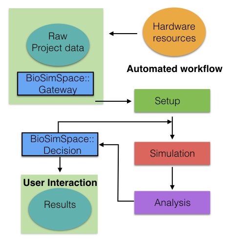

Towards molecular recognition using Molecular dynamics
Molecular recognition plays a vital role in many biological processes ranging from protein-ligand interactions to DNA-protein interactions. The ability to reliably predict if and how biological molecules will interact using computational tools therefore allows to gain invaluable insights into a large number of biological systems. However, the ability of successfully predict the binding behaviour of even a small (guest) molecule binding successfully to a larger (host) molecule with computer simulations remains a challenge.Enhanced sampling methods and their analysis
While computational techniques are nowadays wildly used, molecular dynamics approaches for modelling biological systems, still face two main problems: 1. Reaching adequate simulation timescales to reliably sample and predict thermodynamic and dynamic behaviour of molecular systems that are comparable to experimental timescales. 2. generating reliable models that capture experimental behaviour well. In the context of proteins and and small drug like molecules the reliable model is the molecular mechanics forcefield used for modelling the system.
Therefore one of my main focus is to develop new simulation and analysis methodologies to optimally exploit data analysis and generation. The new methods are then tested in either community challenges such as the D3R grand challenges or other biologically relevant or interesting problems. For example the above images shows an order RMSD matrix of HSP90 PDB structures and their clustering. The clustering was achieved using a mixture of spectral clustering and Markov state modelling and further allows to group protein target structures for simulation preparation.
Molecular simulation workflows

Another issue that plagues the field of simulations is the frequent non-reproducible manual preparation done for setting up molecular simulations. In particular when trying to scan large libraries of small molecule compounds against a protein or multiple proteins. The process is time consuming and prone to mistakes. Therefore I am interested in improving existing and devising new biomolecular simulation workflows and make progress in automated decision making on how to setup initial protein structure in particular with the purpose of running alchemical free energy simulations that allow the estimation of binding free energies. The picture on the right illustrates aspects that play a part in a biomolecular simulation workflow.